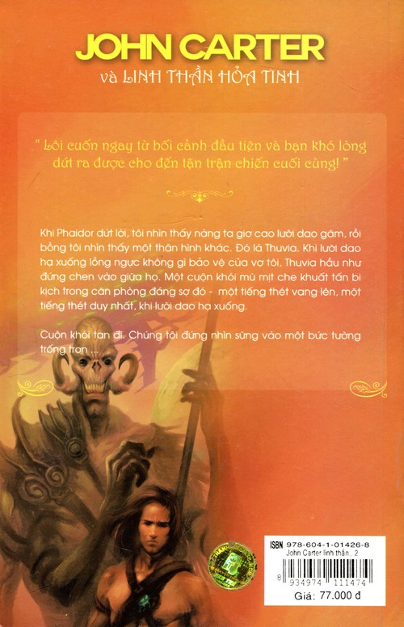

John Carter, John Carter," nàng nức nở, với mái đầu thân thương tựa trên vai tôi.
“Thậm chí lúc này em vẫn hầu như không thể tin vào đôi mắt của chính mình. Khi cô gái, Thuvia, bảo em rằng chàng đã trở lại Barsoom, em lắng nghe, nhưng không thể hiểu nổi, vì dường như một niềm hạnh phúc như thế là bất khả đối với một người đã chịu đựng quá nhiều trong sự lẻ loi câm lặng suốt bấy nhiêu năm dài. Cuối cùng, khi em nhận ra rằng đó là sự thật, và biết rõ cái nơi đáng sợ mà em đã bị giam, em ngờ rằng chàng khó có thể tới với em.
“Ngày tháng trôi qua, tuần trăng này sang tuần trăng khác qua đi mà không mang tới một tin tức mơ hồ nhất nào về chàng, em ủy thác bản thân mình cho số phận. Và bây giờ khi chàng đã tới, em hầu như không thể tin được. Suốt một giờ qua em đã nghe thấy tiếng xung đột trong cung diện, em không biết chúng có ý nghĩa gì, nhưng em đã hy vọng rằng đó có thể là những người Helium do hoàng tử của em dẫn đầu.
“Và hãy nói cho em biết, Carthoris, con trai của chúng ta, ra sao rồi?
“Nó đi cùng với tôi chưa đầy một giờ trước, Dejah Thoris ạ,” tôi đáp. “Hẳn là nàng đã nghe thấy những người của nó chiến đấu trong nội vi của ngôi đền.”
“Issus ở đâu?” Tôi hỏi một cách đột ngột.
Dejah Thoris nhún vai.
“Bà ta cho lính canh dẫn em tới đây ngay trước khi trận đánh bắt đầu trong phạm vi các căn phòng lớn của đền. Bà ta bảo rằng sẽ cho gọi em sau. Trông bà ta có vẻ rất giận dữ và sợ hãi. Em chưa bao giờ trông thấy bà ta hành động với một thái độ dao dộng và gần như kinh hoàng như thế. Bây giờ em biết rằng hẳn đó là vì bà ta đã biết rằng John Carter, hoàng tử xứ Helium, đang tới để yêu cầu bà ta giải thích lý do cầm tù công chúa của chàng ta.”
Những âm thanh xung đột, tiếng va chạm của vũ khí, tiếng la hét và tiếng chạy vội của nhiều người vẳng tới chỗ chúng tôi từ nhiều nơi khác nhau trong ngôi đền. Tôi biết rằng tôi cần tới đó, nhưng tôi không dám bỏ mặc Dejah Thoris, cũng không dám đưa nàng đi với tôi đi vào chiến địa hỗn loạn và nguy hiểm.
Cuối cùng, tôi nhớ ra những căn hầm mà tôi vừa thoát ra từ đó. Vì sao không giấu nàng ở đó cho tới khi tôi có thể quay lại và đưa nàng an toàn rời xa cái chốn đáng sợ này mãi mãi. Tôi giải thích kế hoạch của mình cho nàng nghe.
Nàng bám chặt vào tôi một lúc.
“Em không thể chịu được việc phải xa rời chàng bây giờ, dù chỉ là một phút, John Carter,” nàng nói. “Em rùng mình với ý nghĩ lại chỉ có một mình đơn độc ở nơi mà sinh vật kinh khủng đó có thể phát hiện ra. Chàng không biết bà ta đâu. Không ai có thể tưởng tượng nổi sự độc ác dã man của bà ta nếu không chứng kiến những việc làm hàng ngày của bà ta trong hơn nửa năm trời. Trong toàn bộ thời gian này em đã nhận ra những điều mà chính mắt em trông thấy.”
“Vậy tôi sẽ không rời khỏi nàng, công chúa của tôi,” tôi đáp.
Nàng im lặng một lúc, rồi kéo mặt tôi sát vào mặt nàng và hôn tôi.
“Đi đi, John Carter,” nàng nói. “Con trai chúng ta ở đó, và cả những người lính Helium, đang chiến đấu cho công chúa xứ Helium. Chàng nên có mặt ở đó. Em không nên nghĩ tới bản thân mình vào lúc này, mà phải nghĩ tới họ và bổn phận của chồng mình. Em không thể chịu được nếu làm như thế. Hãy giấu em vào một căn hầm và đi đi.’
Tôi dẫn nàng tới cánh cửa mà tôi đã đi qua đó vào trong phòng từ bên dưới. Ở đó, tôi ôm chặt nàng vào lòng, và rồi, dù điều này làm tim tôi tan nát, và phủ đầy lòng tôi những bóng đen u ám nhất nhất của dự cảm kinh khủng, tôi dẫn nàng qua ngưỡng cửa, hôn nàng một lần nữa, rồi khép cánh cửa lại.
Không ngần ngừ thêm nữa, tôi vội vã chạy từ căn phòng về hướng có âm thanh hỗn loạn nhất. Tôi đã chạy qua gần nửa tá phòng trước khi tới được đấu trường của một trận đánh dữ dội. Những tên da đen tập trung đông đảo ở lối vào của một căn phòng lớn, đang cố gắng chặn bước tiến vào các khu vực thiêng liêng bên trong của một đội quân da đỏ.
Vì đến từ bên trong, tôi nhận ra mình đứng ở phía sau bọn da đen, và không chờ để tính toán đến số lượng của chúng hay sự mạo hiểm điên rồ của tôi, tôi nhanh chóng lao qua căn phòng và lao vào chúng từ phía sau với lưỡi gươm dài sắc bén.
Khi vung nhát kiếm đầu tiên, tôi hét lớn: “Vì Helium!” Rồi tôi tấn công ráo riết giữa những chiến binh kinh ngạc, trong khi những người lính da đỏ không hề bất ngờ khi nghe thấy giọng của tôi và với những tiếng reo hò “John Carter! John Carter!” họ nhân đôi những nỗ lực của mình một cách hữu hiệu đến nỗi trước khi bọn da đen có thể hồi phục lại từ sự mất tinh thần tạm thời, hàng ngũ của chúng đã bị phá vỡ và những người da đỏ đã tràn vào phía trong phòng.
Giá như Hỏa tinh có một sử gia tài giỏi, trận đánh trong căn phòng đó ắt hẳn sẽ đi vào cuốn biên niên sử của nó với ý nghĩa là một tượng đài lịch sử đối với sự tàn ác dã man của những người dân hiếu chiến của nó. Hôm đó có năm trăm người chiến đấu tại đó, người da đen chống người da đỏ. Không một ai yêu cầu sự tha mạng hay ban phát nó. Như thể họ đánh nhau một cách đồng lòng, như thể để xác định một lần và mãi mãi quyền được sống của tất cả bọn họ, theo quy luật mạnh được yếu thua.
Tôi nghĩ tất cả chúng ta đều biết rằng kết quả của trận đánh này sẽ xác định mãi mãi vị trí tương đối của hai chủng tộc này trên Barsoom. Nó là một trận đánh giữa cái cũ và cái mới, nhưng tôi chưa một lần thắc mắc về kết quả của nó. Với Carthoris kề vai sát cánh bên tôi, tôi chiến đấu cho người da đỏ của Barsoom và cho sự giải phóng toàn bộ bọn họ khỏi cái ách nghẹt thở của một sự mê tín xấu xa.
Chúng tôi tả xung hữu đột khắp căn phòng cho tới khi nền nhà ngập tràn máu tới mắt cá chân, và những xác chết nằm ở đó ken dầy tới mức có đến phân nửa thời gian chúng tôi phải đứng trên thân thể của họ trong lúc đánh nhau. Khi chúng tôi lao về phía những cánh cửa sổ lớn trông xuống những khu vườn của Issus, tôi bắt gặp một cảnh tượng khiến lòng tôi tràn ngập nỗi hân hoan.
“Nhìn kìa!” Tôi hét lên. “Những người của chủng tộc Con Cả, hãy nhìn kìa!”
Trong khoảnh khắc, trận đánh ngưng hẳn lại, và mọi con mắt đều cùng lúc quay về hướng mà tôi đã chỉ, và cảnh tượng mà bọn Con Cả trông thấy, chưa có ai trong số họ từng tưởng tượng nổi ra.
Chắn ngang qua những khu vườn, từ phía này đến phía kia, là một hàng chiến binh da đen đang đứng nhấp nhô, trong khi ở phía ngoài họ và đang ép họ cứ lùi mãi về sau là một đoàn chiến binh da xanh cưỡi trên những con ngựa to lớn. Trong khi chúng tôi quan sát, một người, dữ tợn hơn và tàn ác hơn các đồng đội khác, từ phía sau đoàn quân tiến ngựa về phía trước, và vừa tiến lên ông ta vừa hét to những mệnh lệnh dữ dằn cho đoàn quân kinh khủng của mình.
Đó là Tars Tarkas, vua xứ Thark. Khi ông đặt ngang ngọn giáo lớn bằng kim loại dài bốn mươi bộ, chúng tôi thấy các chiến binh của ông cũng làm như thế. Khi đó chúng tôi diễn dịch được mệnh lệnh của ông. Lúc này những người da xanh chỉ cách hàng quân da đen khoảng hai mươi thước Anh, và với một tiếng thét xung trận hoang dại, khủng khiếp, các chiến binh da xanh tấn công. Hàng quân da đen chống cự được một lúc, nhưng chỉ một lúc - rồi những con thú đáng sợ mang những kỵ sĩ cũng đáng sợ tương đương hoàn toàn vượt qua khỏi nó.
Theo sau họ là những đại đội quân da đỏ. Đoàn quân da xanh tản ra bao vây ngôi đền. Những người da đỏ tấn công vào bên trong, và chúng tôi quay lại để tiếp tục trận đánh bị cắt ngang của mình; nhưng các kẻ địch của chúng tôi đã biến mất.
Ý nghĩ đầu tiên của tôi là Dejah Thoris. Sau khi gọi báo cho Carthoris biết rằng tôi đã tìm ra mẹ nó, tôi bắt đầu chạy về hướng căn phòng nơi tôi đã giấu để nàng ở lại, với con trai tôi chạy sát bên cạnh. Sau lưng chúng tôi là những người còn sống sót sau trận chiến đẫm máu trong lực lượng nhỏ bé của chúng tôi.
Ngay khi bước vào phòng, tôi thấy rằng có ai đó đã tới đó kể từ lúc tôi rời khỏi. Một tấm lụa nằm trên sàn nhà. Trước đó nó không nằm ở đó. Ngoài ra còn có một con dao găm và nhiều đồ trang sức bằng kim loại nằm vương vải đó đây như thể bị giật ra khỏi người đeo chúng trong một cuộc giằng co. Nhưng tệ hơn tất cả là cánh cửa dẫn tới những căn hầm nơi tôi giấu công chúa của tôi đang hé mở.
Tôi phóng tới trước cánh cửa, đẩy nó mở rộng ra và lao vào bên trong. Dejah Thoris đã biến mất. Tôi gọi lớn tên nàng nhiều lần, nhưng không có lời đáp lại. Tôi nghĩ rằng trong khoảnh khắc đó tôi gần như là người mất trí. Tôi không nhớ tôi đã làm gì hay nói gì, nhưng tôi biết lúc đó trong đầu tôi nổi lên một cơn giận dữ điên cuồng.
“Issus!” tôi hét lớn. “Issus! Issus ở đâu? Lục soát khắp đền để tìm bà ta, nhưng đừng ai làm hại bà ta trừ John Carter. Carthoris, những căn phòng của Issus ở đâu?”
“Đường này,” thằng bé la lên, và không đợi xem tôi có nghe thấy nó hay chưa, nó lao đi với tốc độ thật nhanh, tiến về phía trung tâm của ngôi đền. Tuy nhiên, cũng nhanh không kém nó, tôi vẫn chạy bên cạnh nó, thúc nó chạy nhanh hơn nữa.
Cuối cùng chúng tôi tới một cánh cửa lớn có nhiều hình chạm trổ, Carthoris phóng qua cánh cửa, trước tôi một bước. Khi đã vào trong, chúng tôi bắt gặp một cảnh tượng mà tôi đã từng chứng kiến một lần trong ngôi đền trước đó - cái ngai vàng của Issus, với những nữ nô ngồi tựa vào bên dưới và xung quanh nó là những hàng binh lính.
Chúng tôi không cho bọn lính một cơ hội để rút lui mà tiến tới gần chúng thật nhanh. Với một nhát gươm, tôi hạ gục hai tên ở hàng trước. Rồi với sức nặng và trớn của thân hình, tôi lao cả người qua hai hàng còn lại và phóng lên trên cái bệ bên cạnh ngai vàng chạm trổ.
Mụ già đáng ghét đang ngồi xổm ở đó kinh hoàng, cố thoát khỏi tôi và nhảy vào một cái hố sau lưng bà ta. Nhưng lần này tôi không bị đánh lừa bởi bất kỳ thủ đoạn nhỏ mọn nào như thế nữa. Trước khi bà ta nhổm lên được phân nửa người, tôi đã tóm được cánh tay của bà ta, và rồi, khi nhìn thấy bọn lính canh đang lao vào tôi từ mọi phía, tôi rút lưỡi dao găm ra, dí nó sát vào ngực của mụ già gớm ghiếc, ra lệnh cho chúng dừng lại.
“Lui lại!” Tôi hét to với bọn chúng. “Lui lại! Bàn chân da đen đầu tiên đặt lên cái bục này sẽ khiến cho lưỡi dao găm của ta cắm sâu vào trái tim của Issus.”
Chúng ngần ngừ trong giây lát. Rồi một viên sĩ quan ra lệnh cho chúng lùi lại. Trong lúc đó, từ ngoài hành lang, cả ngàn chiến binh da đỏ dưới quyền chỉ huy của Kantos Kan, Hor Vastus và Xodar tràn vào phòng, áp sát vào nhóm người bé nhỏ còn sống sót.
“Dejah Thoris đâu?” Tôi hét lên hỏi mụ già.
Trong một lúc, đôi mắt bà ta đảo tròn một cách man dại trước cảnh tượng bên dưới. Tôi nghĩ cần có một thời gian ngắn để điều kiện thực tế tạo một ấn tượng nào đó với bà ta. Thoạt tiên, bà ta không nhận ra ngay rằng ngôi đền đã thất bại trước cuộc tấn công của những người ở thế giới bên ngoài. Khi đã nhận ra điều này, ắt hẳn bà ta cũng đã nhận ra một thực tế khủng khiếp khác - sự mất đi quyền lực - sự ô nhục - sự lừa dối và mạo danh mà suốt lâu nay bà ta thực hiện đối với thần dân của mình đã bị phơi bày.
Chỉ còn cần có thêm một điều duy nhất để hoàn thành hiện thực của bức tranh mà bà ta đang nhìn thấy, và điều đó đã được bổ sung bởi tên cận thần cao cấp nhất của bà ta - tên tu sĩ cao cấp nhất trong tôn giáo của bà ta - tên bộ trưởng chính phủ của bà ta.
“Issus, Nữ thần của Cái chết và Cuộc Sống Vĩnh Cửu,” hắn la lên, “hãy vùng lên trong sức mạnh của cơn phẫn nộ chính đáng của ngài và với một cái vẫy duy nhất của bàn tay có quyền năng vô hạn của ngài, hãy tiêu diệt những tên báng bổ này! Đừng để cho tên nào chạy thoát! Issus, thần dân của ngài trông cậy vào ngài. Con gái của Vầng trăng thấp, chỉ có ngài là có tất cả quyền năng sức mạnh. Chỉ có ngài là có thể cứu vớt nhân dân của ngài. Chúng thần chờ ngài hành động. Hãy vung tay lên đi!”
Khi nghe nói thế, bà ta trở nên điên dại. Một kẻ mất trí đang kêu hét lắp ba lắp bắp và quằn quại trong nắm tay tôi. Bà ta lồng lộn, cào xé trong cơn điên cuồng bất lực. Rồi bà ta chợt phát ra một tràng cười quái dị và khủng khiếp khiến máu người ta muốn đông cứng lại. Những người nô tỳ trên bục thét lên và co người tránh ra xa. Bà ta nhảy xổ tới họ, nghiến răng trèo trẹo rồi phun nước bọt vào họ qua đôi môi xùi bọt. Chúa ơi, đó là một cảnh tượng kinh hoàng.
Cuối cùng, tôi lắc mạnh thân người bà ta, hy vọng có thể đưa bà ta trở lại trạng thái có lý trí.
“Dejah Thoris đâu?” Tôi hét lên lần nữa.
Sinh vật đáng sợ trong nắm tay của tôi lầm bầm những lời vô nghĩa một hồi, rồi đột nhiên một tia sáng ác độc lóe lên trong đôi mắt khép hờ gớm ghiếc đó.
‘Dejah Thoris? Dejah Thoris?” Rồi tràng cười kỳ quặc chói tai lại chọc thủng lỗ tai chúng tôi một lần nữa.
“Phải, ta biết Dejah Thoris. Và Thuvia, và Phaitor, con gái của Matai Shang. Mỗi người trong số chúng đều yêu John Carter. Haha! Thật khôi hài. Chúng sẽ trầm tư mặc tưởng suốt một năm trong ngôi đền Mặt trời, nhưng trước khi năm đó trôi qua, sẽ chẳng còn thức ăn nào cho chúng nữa. Haha, thật là một thú vui thần thánh,” bà ta liếm lớp bọt xùi ra trên mép. “Sẽ không còn thức ăn nữa, ngoại trừ thịt của chính mỗi đứa chúng nó. Haha! Haha!”
Sự kinh khủng của tình cảnh đó hầu như khiến tôi tê liệt cả chân tay. Chính cái sinh vật nằm trong tay tôi đã đưa công chúa của tôi đến cái số phận đáng sợ này. Tôi run lên trong cơn phẫn nộ. Và tôi lắc mạnh Issus, Nữ thần của Đời Sống Vĩnh Cửu như một con chó săn chồn lắc một con chuột.
“Hãy hủy bỏ các mệnh lệnh của bà!” Tôi hét lên. “Triệu hồi ngay tội nhân về đây. Nhanh lên, không thì bà sẽ chết!”
“Quá muộn rồi. Haha! Haha!” Rồi bà ta lại bắt đầu kêu hét và lắp bắp như trước.
Bất giác, lưỡi dao găm của tôi lướt lên phía trên trái tim thối tha của bà ta. Nhưng có gì đó đã ngăn bàn tay tôi lại, và giờ đây tôi mừng vì điều đó. Tự tay giết chết một người đàn bà là một điều kinh khủng. Nhưng tôi chợt nghĩ ra một số phận phù hợp hơn cho vị thần giả tạo này.
“Này, những người dân Con Cả,” tôi hét lớn, quay sang những người đang đứng trong phòng. “Hôm nay, các người đã nhìn thấy rõ sự bất lực của Issus. Issus không phải là thần thánh gì cả. Bà ta là một mụ già độc ác và xấu xa. Bà ta đã lừa dối, lường gạt các người suốt bao nhiêu năm qua. Hãy nhận lấy bà ta. John Carter, hoàng tử xứ Helium, sẽ không làm bẩn tay mình với máu của bà ta.” Nói xong, tôi đẩy con vật đang gầm gừ - kẻ chỉ nửa giờ trước đây đã được toàn thế giới tôn thờ như một thần linh - từ bục ngai vàng vào bàn tay đang chờ đợi của những người dân bị lừa dối và đang muốn trả thù.
Thoáng thấy Xodar trong số những sĩ quan da đỏ, tôi bảo anh nhanh chóng dẫn tôi tới đền Mặt trời, và, không hề chờ đợi để biết xem chủng tộc Con Cả sẽ dành cho nữ thần của họ số phận nào, tôi lao ra khỏi phòng cùng với Xodar, Carthoris, Hor Vastus, Kantos Kan và khoảng hai chục quý tộc da đỏ.
Anh bạn da đen nhanh chóng dẫn chúng tôi băng qua những căn phòng bên trong của ngôi đền, cho tới khi chúng tôi tới cung điện trung tâm - một khoảng không gian hình tròn rộng lớn lót đá hoa trắng. Trước mặt chúng tôi sừng sững một tòa tháp bằng vàng được thiết kế và chế tác một cách cực kỳ quái lạ, khảm đầy những kim cương, hồng ngọc, bích ngọc, lam ngọc, lục bảo ngọc và hàng ngàn loại đá quý không tên khác của Hỏa tinh. Những loại đá quý đó trong suốt và lóng lánh đáng yêu hơn các loại đá vô giá nhất của trái đất rất nhiều.
“Lối này,” Xodar nói, dẫn chúng tôi tới một lối vào của một địa đạo nằm ở sân trong của ngôi đền. Khi chúng tôi vừa đi tới một điểm xuống dốc, một tiếng rền rĩ trầm trầm phát ra từ đền Issus, Rồi một người da đỏ, Djor Kantos, đại úy chỉ huy đại đội số năm, chạy ào vào từ một cánh cổng gần đó và hét lớn bảo chúng tôi quay lại.
“Bọn da đen đã đốt đền,” anh ta hét lên. “Lửa đang cháy ở cả ngàn nơi khác nhau. Hãy nhanh chân chạy ra các khu vườn bên ngoài, không thì các ông chết hết.”
Khi anh ta đang nói, chúng tôi nhìn thấy khói đang tuôn ra từ hàng chục cánh cửa sổ mở ra sân trong của đền Mặt trời, và xa bên trên tòa tháp cao nhất của đền Issus, một cột khói ngày càng to đang treo lơ lửng.
“Quay lại! Quay lại” Tôi hét to với những người đi theo tôi. “Lối đi! Xodar. Hãy chỉ lối cho họ và rời khỏi tôi. Tôi phải gặp công chúa vợ tôi đã.”
“Theo tôi, John Carter,” Xodar đáp, và không chờ tôi đáp anh lao xuống đường hầm dưới chân chúng tôi. Tôi chạy theo anh sát gót, băng qua khoảng năm sáu con đường. Cuối cùng, anh dẫn tôi đi dọc theo một con đường bằng. Tôi nhìn thấy ở cuối con đường này có một căn phòng le lói sáng.
Nhiều chấn song to lớn chắn ngang không cho chúng tôi đi tiếp, nhưng ở phía bên kia chúng, tôi đã trông thấy nàng - công chúa độc nhất vô song của tôi. Có cả Thuvia và Phaidor nữa. Khi nhìn thấy tôi, nàng chạy tới hàng chấn song ngăn cách chúng tôi. Căn phòng đã xoay đi khá nhiều đến nỗi chỉ còn ló ra một phần nhỏ của lối vào từ bức tường ngôi đền nằm đối diện với đầu có hàng chấn song của hành lang. Khoảng hở này đang chầm chậm khép lại. Trong giây lát, chỉ còn một khe hở hẹp, rồi ngay cả khe hở này cũng khép lại nốt. Trong suốt một năm Hỏa tinh dài dằng dặc, căn phòng sẽ chậm chạp xoay cho tới khi một lần nữa chỗ hở trên tường trùng lên đầu của hành lang trong một ngày ngắn ngủi.
Nhưng suốt thời gian đó, những chuyện khủng khiếp nào sẽ xảy ra trong căn phòng đó!
“Xodar!” Tôi kêu lên. “Không thể dừng bộ phận xoay đáng sợ này lại được hay sao? Có người nào nắm giữ bí mật của những chấn song kinh khủng này không?”
“Tôi e là chúng ta sẽ không gọi ai tới kịp cả, dù tôi sẽ đi và cố gắng thử xem sao. Hãy ở đây chờ tôi.”
Sau khi anh đi, tôi đứng trò chuyện với Dejah Thoris. Nàng đưa bàn tay thân thương của mình qua những thanh chấn song ác nghiệt để tôi có thể nắm giữ nó cho tới giây phút cuối cùng.
Thuvia và Phaidor cũng tới gần, nhưng khi Thuvia nhận ra nên để cho chúng tôi yên, nàng rút lui tới đầu kia của căn phòng. Nhưng con gái của Matai Shang thì không.
“John Carter,” nàng nói, “có thể đây là lần cuối chàng nhìn thấy bất kỳ ai trong số chúng em. Hãy nói với em rằng chàng yêu em, để em có thể chết trong hạnh phúc.”
“Tôi chỉ yêu công chúa xứ Helium,” tôi lặng lẽ trả lời. “Tôi rất tiếc, Phaidor, nhưng tôi đã nói điều này với cô ngay từ đầu.”
Nàng cắn môi và quay đi, nhưng trước đó, tôi đã trông thấy cái quắc mắt âm u và xấu xa của nàng dành cho Dejah Thoris. Sau đó, nàng đứng cách xa một chút, không thật xa như tôi mong muốn, vì tôi không thể từ biệt người vợ yêu dấu của tôi một cách thân mật riêng tư.
Chúng tôi đứng chuyện trò khe khẽ như vậy trong vài phút. Khoảng hở ngày càng thu hẹp lại. Chỉ trong giây lát, nó đã trở nên nhỏ hẹp đến nỗi thân hình thanh mảnh của vợ tôi cũng không thể hiện ra đầy đủ. Ôi, sao Xodar không nhanh chân lên nhỉ! Chúng tôi có thể nghe thấy trên đầu tiếng những tiếng vọng mơ hồ của một sự náo động ầm ĩ. Đó là những đám đông da đen, da đỏ và da xanh đang tranh nhau thoát khỏi ngọn lửa của đền Issus.
Một ngọn gió lùa từ bên trên mang những làn khói xộc vào lỗ mũi chúng tôi. Trong lúc chúng tôi đứng chờ Xodar, khói ngày càng dầy đặc. Ngay sau đó, tôi nghe thấy tiếng hét ở đầu kia của hành lang, và tiếng chân vội vã.
“Quay lại, John Carter, quay lại!” Một giọng người hét to, “ngay cả các căn hầm cũng bốc cháy rồi.”
Trong nháy mắt, khoảng một chục người lao qua mà khói đến bên tôi. Đó là Carthoris, Kantos Kan, Hor Vastus, Xodar và vài người đã theo tôi đi vào sân đền.
“Không còn hy vọng gì nữa, John Carter, Xodar kêu lên. “Người giữ chìa khóa đã chết và chùm chìa khóa không có trên xác anh ta. Hy vọng duy nhất của chúng ta là dập tắt đám cháy này và tin vào định mệnh rằng một năm sau sẽ tìm thấy công chúa của chúng ta vẫn còn sống sót khỏe mạnh. Tôi đã mang tới đủ thức ăn cho họ. Khi khoảng hở này khép kín, khói không thể vào chỗ họ được, và nếu chúng ta nhanh chóng dập tắt lửa, tôi tin là họ sẽ an toàn.”
“Vậy thì đi đi, chính anh, và hãy mang những người khác theo anh,” tôi đáp. “Tôi sẽ ở lại đây bên cạnh vợ tôi cho tới khi một cái chết từ tâm giải thoát tôi khỏi nỗi đớn đau. Tôi không quan tâm tới việc sống chết nữa.”
Trong lúc tôi nói, Xodar đã chuyền một số thùng nhỏ vào bên trong căn ngục. Sau đó giây lát, khoảng hở chỉ còn lại không đầy hai phân. Dejah Thoris cố đứng nép sát người bên cạnh nó, khẽ nói những lời hy vọng và động viên tôi, và thúc giục tôi hãy cứu lấy chính mình.
Đột nhiên, tôi thấy ở phía sau nàng gương mặt xinh đẹp của Phaidor đang chuyển thành một vẻ căm ghét thâm hiểm. Khi mắt tôi chạm phải mắt nàng, nàng nói:
“John Carter, đừng nghĩ rằng chàng có thể nhẹ nhàng vứt bỏ sang bên tình yêu của Phaidor, con gái của Matai Shang. Cũng đừng hy vọng ôm lại Dejah Thoris trong vòng tay của chàng một lần nữa. Chàng sẽ chờ một năm dài, thật dài. Nhưng hãy biết rằng khi nó trôi qua, chính vòng tay của Phaidor sẽ chào đón chàng - chứ không phải của công chúa xứ Helium. Hãy nhìn đây, nàng ta sẽ chết!”
Khi nàng nói hết, tôi nhìn thấy nàng giơ cao lưỡi dao găm, rồi tôi nhìn thấy một thân hình khác. Đó là Thuvia. Khi lưỡi dao hạ xuống lồng ngực không gì bảo vệ của vợ tôi, Thuvia hầu như đứng chen vào giữa họ. Một cuộn khói mù mịt che khuất tấn bi kịch trong căn phòng đáng sợ đó - một tiếng thét vang lên, một tiếng thét duy nhất, khi lưỡi dao hạ xuống.
Cuộn khói tan đi. Chúng tôi đứng nhìn sững vào một bức tường trống trơn. Khe hở cuối cùng đã khép lại, và suốt một năm dài, căn phòng đáng sợ đó sẽ lưu giữ bí mật của nó khỏi con mắt của người đời.
Họ thúc giục tôi rời khỏi nơi đó.
“Chỉ lát nữa thôi sẽ là quá muộn,” Xodar la lên. “Thật sự, bây giờ vẫn còn có một cơ may duy nhất để chúng ta có thể thoát ra qua khu vườn bên ngoài sống sót. Tôi đã lệnh cho các bơm nước bắt đầu hoạt động, và trong vòng năm phút những căn hầm sẽ bị ngập. Nếu không muốn chết chìm như những con chuột trong bẫy, chúng ta phải vội lên để lao qua ngôi đền đang cháy.”
“Đi đi,” tôi giục họ. “Hãy để tôi chết ở đây bên cạnh công chúa của tôi - Với tôi, không còn hy vọng hay hạnh phúc nào khác nữa. Năm sau, khi họ mang xác của nàng ra khỏi cái nơi kinh khủng đó, hãy để họ tìm thấy xác của chồng nàng đang chờ đợi nàng.”
Về mọi chuyện xảy ra sau đó, tôi chỉ có một ký ức mơ hồ rối rắm. Dường như tôi đã vùng vẫy với nhiều người, rồi tôi bị nhấc lên khỏi mặt đất và mang đi khỏi đó. Tôi không biết. Tôi không bao giờ hỏi, cũng không bao giờ có bất kỳ người nào trong số những người có mặt ngày hôm đó đụng chạm tới nỗi buồn của tôi hay nhắc tôi nhớ lại những gì đã xảy ra. Những điều mà họ biết có thể sẽ khoét lại vết thương kinh khủng trong trái tim tôi.
Ôi! Giá mà tôi biết được một điều thôi, cái gánh nặng đợi chờ đáng sợ sẽ được cất khỏi đôi vai tôi! Nhưng chỉ có thời gian mới có thể trả lời được lưỡi dao găm của kẻ sát nhân đã xuyên vào lồng ngực xinh đẹp của người này hay người khác.
HẾT
